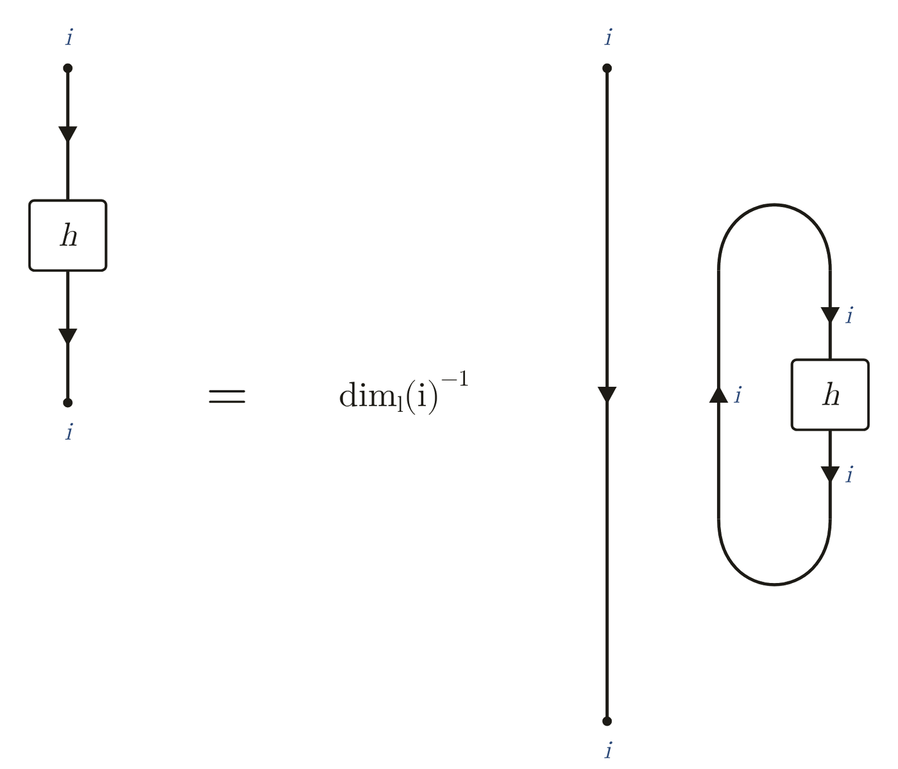
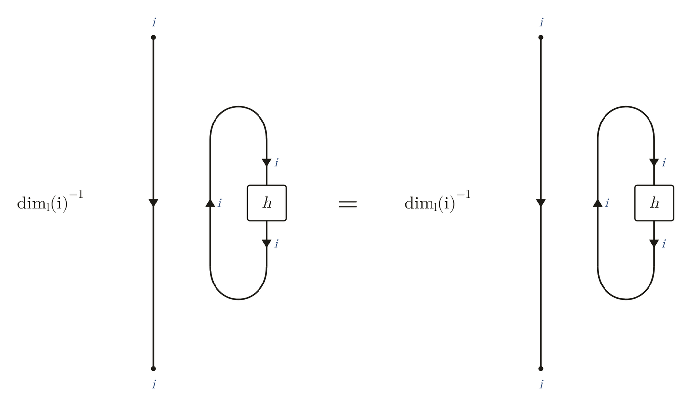

Lemma 4.2. In a non-degenerate pivotal k-category: (a) the dimensions diml(i) and dimr(i) of a simple object i are invertible; (b) every endomorphism f of a simple i is f=diml(i)−1trl(f)idi=dimr(i)−1trr(f)idi. It follows that diml(i)trr(f)=dimr(i)trl(f), formula (4.2).
Proof of (a), step by step. With S=((i,+),(i,−)), coevi spans Hom(1,i⊗i∗), and the 1×1 matrix of ωS is ωS(coevi⊗coevi). The book draws it, straightens it to a circle, and reads off dimr(i):
step
book
editor
ωS(coevi⊗coevi) = the circle
isotopy
(2.1) left zigzag
the circle = dimr(i)
definition of dimr
dim_l(i), dim_r(i) of a simple object
Lemma 4.2(a) ω_S(coev_i ⊗ coev_i) = dim_r(i)
Signature and expression (duals: X*, pre-fusion ticked):
(2.1) left zigzag → dim_l(i), dim_r(i) of a simple object
2
evicoevi
dim_l(i), dim_r(i) of a simple object
3
diml(i)
already in normal form
Normal form:
diml(i)
The editor reports: ✓ Both sides reduce to the same normal form, so the equation holds. · Open this step in the editor
Part (b). Declaring simple i lets the rule Lemma 4.2(b) replace an endomorphism h of i by diml(i)−1trl(h)idi. A box that already sits alone on a loop is left alone, so the rule stops.
Lemma 4.2(b) f = dim_l(i)⁻¹ tr_l(f) id_i
Signature and expression (duals: X*, pre-fusion ticked):
simple i
h : i → i
h = dim_l(i)⁻¹ (id_i ⊗ ev_i(id_i* ⊗ h)coev~_i)
h=diml(i)−1idi⊗(evi(idi∗⊗h)coevi)

side
expression
rules Simplify uses
1
h
Lemma 4.2(b)
2
diml(i)−1idi⊗(evi(idi∗⊗h)coevi)
already in normal form
Normal form:
diml(i)−1idi⊗(evi(idi∗⊗h)coevi)

The editor reports: ✓ Both sides reduce to the same normal form, so the equation holds. · Open this step in the editor
(4.2) dim_l(i) tr_r(f) = dim_r(i) tr_l(f)
(4.2). The rule (4.2) turns a right trace of an endomorphism of a simple object into diml(i)−1dimr(i) times its left trace.
Signature and expression (duals: X*, pre-fusion ticked):
The editor reports: ✓ Both sides reduce to the same normal form, so the equation holds. · Open this step in the editor
In the notebook graphical-calculus-4.nb (sections 70–79, code in fusion-4.wl), section 73 checks (a), both forms of (b), and (4.2) in matrices (lemma42).